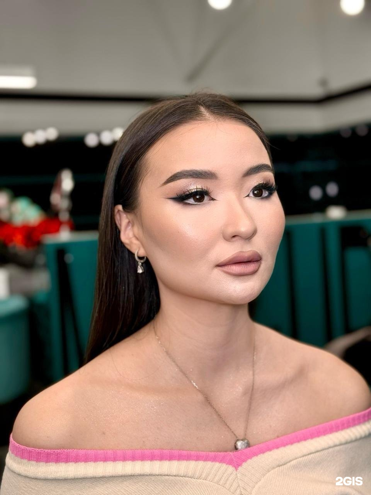

Волосы
Женские и мужские стрижки, окрашивание, укладки, кератиновое выпрямление и уход.
от 4 000 ₸стрижка · по данным 2GIS
↗Ваш салон в ЖК Palladium
Волосы, ногти и макияж — в одном месте, с вниманием к тому, как вы хотите себя видеть.

Красота — это не один штрих.
Это когда всё складывается.
Салон полного цикла
Услуги собраны по направлениям, чтобы начать с того, что нужно именно вам. Актуальную доступность времени смотрите в онлайн-записи.
Женские и мужские стрижки, окрашивание, укладки, кератиновое выпрямление и уход.
Маникюр и педикюр — аккуратная форма, уход и покрытие.
Макияж для события или особенного дня, подобранный под ваш образ.
Оформление бровей, ламинирование и наращивание ресниц.
Указаны стартовые цены из карточки 2GIS. Перед визитом уточните итоговую стоимость у салона.
Фрагменты Керім
Фотографии взяты из галереи именно этого филиала в 2GIS.

Керім · Алматы
Керім — салон красоты в жилом комплексе Palladium. По карточке 2GIS здесь объединены парикмахерские услуги и ногтевой сервис; в фотогалерее также представлены макияж и бьюти-работы.
Онлайн-запись ведёт на Zapis.kz. Выберите услугу и время там — салон подтвердит детали записи.
Открыть онлайн-запись ↗Ежедневно · 09:00–20:00
Проверьте свободные часы и выберите услугу в системе записи салона.
Записаться на Zapis.kz ↗Будем рады видеть
ЖК Palladium
ул. Жамбыла, 120, цокольный этаж
Алмалинский район, Алматы
Ежедневно
09:00–20:00
4,7 · 1 244 оценки в 2GIS